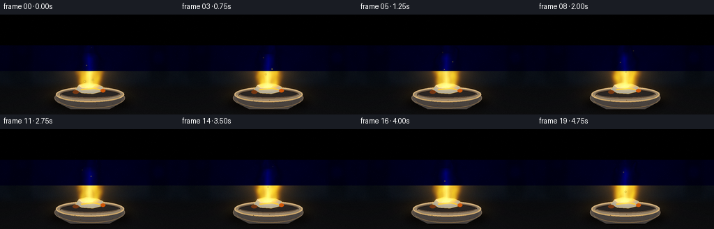
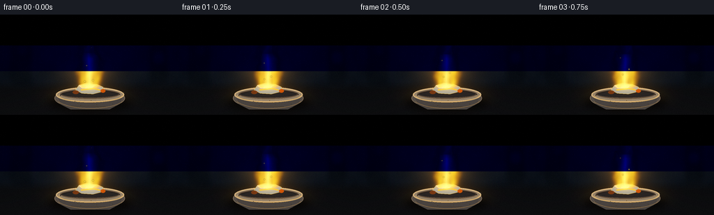
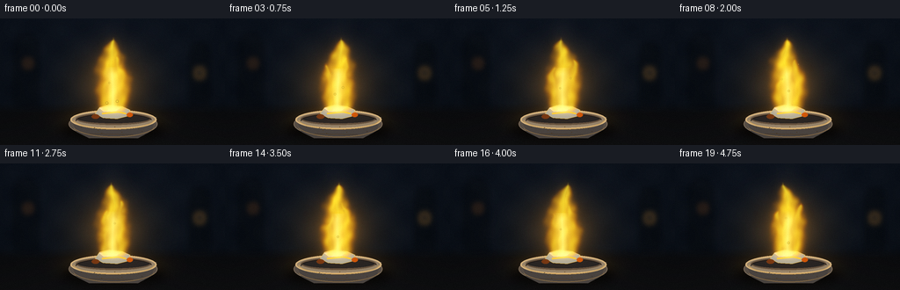
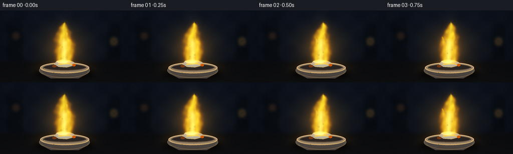

CODING AGENTS AS PIXEL WORLD MODELS
traex/GPT-5.6-Sol · phygen_129
点击播放 · 原生 RGB 像素
逐轮保存的候选
回放视频、检查图与代码变化。
每份候选均可单独播放。实际图片检查记录在下方工具轨迹中。
候选 01播放与检查图
点击播放 · 原生 RGB 像素


展开代码变化
--- 上一保存版本
+++ 本次保存版本
@@ -0,0 +1,270 @@
+"""Procedurally render a steadily burning piece of sodium.
+
+The scene is deliberately built without external assets: softly textured laboratory
+background, a small refractory dish, the metallic sample, smoke, and a layered
+emissive flame. Rendering at 3x resolution gives clean antialiasing at 256x144.
+"""
+
+from pathlib import Path
+import json
+
+import cv2
+import numpy as np
+from PIL import Image, ImageDraw, ImageFilter
+
+import artifact_io
+
+
+ROOT = Path(__file__).resolve().parent
+SPEC = json.loads((ROOT / "task_spec.json").read_text())
+W, H = int(SPEC["width"]), int(SPEC["height"])
+N, FPS = int(SPEC["frames"]), float(SPEC["fps"])
+S = 3
+WW, HH = W * S, H * S
+
+
+def sc(v):
+ """Scale a coordinate or tuple from output pixels to working pixels."""
+ if isinstance(v, (tuple, list)):
+ return tuple(int(round(x * S)) for x in v)
+ return int(round(v * S))
+
+
+def rgba_layer():
+ return Image.new("RGBA", (WW, HH), (0, 0, 0, 0))
+
+
+def composite_rgb(base, overlay):
+ return np.asarray(Image.alpha_composite(Image.fromarray(base, "RGB").convert("RGBA"), overlay).convert("RGB"))
+
+
+def make_background():
+ """A subdued, photographic-looking lab background and slate work surface."""
+ y, x = np.mgrid[0:HH, 0:WW]
+ yn, xn = y / S, x / S
+
+ # Dark blue/charcoal laboratory wall, with a warm pool behind the flame.
+ radial = np.exp(-(((xn - 130) / 91) ** 2 + ((yn - 69) / 72) ** 2))
+ topshade = np.clip(1.0 - yn / 210, 0, 1)
+ fine = 1.5 * np.sin(xn * 0.115) * np.sin(yn * 0.137)
+ arr = np.zeros((HH, WW, 3), np.float32)
+ arr[..., 0] = 7 + 8 * radial + 3 * topshade + fine
+ arr[..., 1] = 11 + 9 * radial + 4 * topshade + fine
+ arr[..., 2] = 16 + 10 * radial + 7 * topshade + fine
+
+ # Matte black slate bench starts behind the crucible.
+ bench = np.clip((yn - 96) / 12, 0, 1)
+ arr[..., 0] = arr[..., 0] * (1 - bench) + (9 + 5 * radial + (yn - 96) * 0.08) * bench
+ arr[..., 1] = arr[..., 1] * (1 - bench) + (10 + 4 * radial + (yn - 96) * 0.07) * bench
+ arr[..., 2] = arr[..., 2] * (1 - bench) + (12 + 3 * radial + (yn - 96) * 0.06) * bench
+ arr = np.uint8(np.clip(arr, 0, 255))
+
+ # Out-of-focus lab silhouettes and bokeh make the setup legible but unobtrusive.
+ deco = rgba_layer()
+ d = ImageDraw.Draw(deco, "RGBA")
+ d.rectangle(sc((16, 26, 43, 99)), fill=(5, 8, 11, 115))
+ d.rectangle(sc((21, 18, 38, 29)), fill=(9, 13, 16, 100))
+ d.rectangle(sc((216, 39, 238, 99)), fill=(5, 8, 11, 120))
+ d.rectangle(sc((219, 29, 235, 43)), fill=(8, 11, 13, 105))
+ d.line(sc((54, 0, 54, 97)), fill=(37, 43, 47, 35), width=sc(1))
+ d.line(sc((202, 0, 202, 97)), fill=(37, 43, 47, 32), width=sc(1))
+ d.ellipse(sc((27, 46, 37, 56)), fill=(177, 91, 24, 22))
+ d.ellipse(sc((221, 56, 233, 68)), fill=(255, 164, 47, 18))
+ d.ellipse(sc((66, 17, 70, 21)), fill=(211, 224, 201, 20))
+ deco = deco.filter(ImageFilter.GaussianBlur(sc(3.2)))
+ return composite_rgb(arr, deco)
+
+
+BACKGROUND = make_background()
+YGRID, XGRID = np.mgrid[0:HH, 0:WW].astype(np.float32)
+X = XGRID / S
+Y = YGRID / S
+
+
+def add_light_pool(scene, flicker):
+ """Warm spill from the sodium line emission on wall, bench, and dish area."""
+ wall = np.exp(-(((X - 128) / 55) ** 2 + ((Y - 76) / 48) ** 2) * 1.8)
+ table = np.exp(-(((X - 128) / 50) ** 2 + ((Y - 117) / 15) ** 2) * 1.6)
+ strength = flicker * (0.22 * wall + 0.31 * table)
+ light = np.stack((255 * strength, 151 * strength, 18 * strength), axis=2)
+ return np.uint8(np.clip(scene.astype(np.float32) + light, 0, 255))
+
+
+def draw_smoke(scene, frame):
+ """Very subtle coherent wisps rising behind the luminous flame."""
+ layer = rgba_layer()
+ d = ImageDraw.Draw(layer, "RGBA")
+ t = frame / FPS
+ for k in range(6):
+ age = (t * 10 + k * 2.9) % 16
+ yy = 78 - age * 5.2
+ xx = 130 + 7 * np.sin(0.72 * age + k * 1.8) + 2 * np.sin(t * 1.3)
+ rx = 7 + age * 0.55
+ ry = 10 + age * 0.8
+ alpha = int(17 * np.sin(np.pi * np.clip(age / 16, 0, 1)) ** 1.2)
+ d.ellipse(sc((xx - rx, yy - ry, xx + rx, yy + ry)), fill=(105, 103, 88, alpha))
+ layer = layer.filter(ImageFilter.GaussianBlur(sc(7.5)))
+ return composite_rgb(scene, layer)
+
+
+def draw_dish_and_sample(scene, frame):
+ """A shallow refractory crucible with a recognisable silvery sodium piece."""
+ layer = rgba_layer()
+ d = ImageDraw.Draw(layer, "RGBA")
+
+ # Soft cast shadow.
+ shadow = rgba_layer()
+ sd = ImageDraw.Draw(shadow, "RGBA")
+ sd.ellipse(sc((69, 116, 188, 139)), fill=(0, 0, 0, 175))
+ shadow = shadow.filter(ImageFilter.GaussianBlur(sc(5)))
+ layer = Image.alpha_composite(layer, shadow)
+ d = ImageDraw.Draw(layer, "RGBA")
+
+ # Crucible/bowl body and warm ceramic rim.
+ d.ellipse(sc((78, 105, 179, 135)), fill=(82, 73, 65, 255), outline=(133, 116, 96, 220), width=sc(1))
+ d.polygon([sc((80, 113)), sc((87, 129)), sc((101, 136)), sc((157, 136)), sc((172, 128)), sc((178, 112))],
+ fill=(70, 64, 60, 255))
+ d.ellipse(sc((80, 104, 178, 126)), fill=(141, 123, 99, 255), outline=(211, 177, 124, 240), width=sc(2))
+ d.ellipse(sc((86, 107, 172, 121)), fill=(39, 35, 33, 255), outline=(97, 78, 59, 255), width=sc(2))
+ d.arc(sc((83, 103, 176, 126)), 7, 174, fill=(248, 200, 119, 180), width=sc(1))
+ d.arc(sc((86, 108, 173, 125)), 181, 351, fill=(29, 25, 24, 230), width=sc(1))
+
+ # Sodium: an irregular, freshly-cut metallic lump with molten gold edge/crust.
+ wobble = 0.4 * np.sin(frame * 0.37)
+ sodium = [(108, 108), (113, 101 + wobble), (124, 98), (139, 100),
+ (148, 104), (145, 111), (133, 114), (117, 113)]
+ d.polygon([sc(p) for p in sodium], fill=(161, 159, 145, 255), outline=(239, 187, 57, 255))
+ d.polygon([sc((113, 102)), sc((125, 99)), sc((138, 101)), sc((132, 105)), sc((118, 106))],
+ fill=(232, 232, 211, 240))
+ d.line([sc((116, 108)), sc((134, 106)), sc((143, 108))], fill=(255, 199, 47, 230), width=sc(2))
+ d.ellipse(sc((124, 101, 132, 105)), fill=(255, 250, 211, 220))
+ d.ellipse(sc((104, 109, 113, 114)), fill=(116, 53, 19, 220))
+ d.ellipse(sc((144, 107, 151, 112)), fill=(217, 87, 8, 210))
+
+ # Front-rim specular marks and subtle pottery texture.
+ d.arc(sc((81, 105, 178, 135)), 18, 161, fill=(174, 139, 92, 165), width=sc(1))
+ d.line(sc((102, 131, 151, 132)), fill=(119, 96, 72, 110), width=sc(1))
+ for j in range(9):
+ xx = 92 + ((j * 23) % 73)
+ yy = 123 + ((j * 7) % 8)
+ d.ellipse(sc((xx, yy, xx + 1.0, yy + .6)), fill=(193, 160, 112, 45))
+ return composite_rgb(scene, layer)
+
+
+def plume_field(x0, base, height, width, phase, frame):
+ """Implicit, smoothly tapered and temporally coherent flame tongue."""
+ tm = frame / FPS
+ u = (base - Y) / height
+ valid = (u >= 0) & (u <= 1.035)
+ uc = np.clip(u, 0, 1)
+
+ # Roots stay fixed while upper flame bends and ripples.
+ sway = (2.8 * np.sin(tm * 2.1 + phase) * uc ** 1.8 +
+ 3.0 * np.sin(uc * 6.5 + tm * 3.4 + phase) * uc ** 1.25 +
+ 1.15 * np.sin(uc * 18.0 - tm * 4.2 + phase * .7) * uc)
+ center = x0 + sway
+ profile = 1.0 + width * np.sin(np.pi * uc) ** .72 + width * .43 * (1 - uc) ** 2
+ dist = np.abs(X - center) / profile
+
+ # Moving cellular modulation along the edge suggests convection, not random cuts.
+ turbulence = (0.08 * np.sin(X * .44 + Y * .18 - tm * 5.0 + phase) +
+ 0.055 * np.sin(X * .18 - Y * .42 + tm * 4.0 + phase * 2.0))
+ edge = np.clip(1.10 - dist + turbulence * (0.3 + uc), 0, 1)
+ vertical = np.clip((u + .03) / .08, 0, 1) * np.clip((1.035 - u) / .06, 0, 1)
+ return edge * edge * (3 - 2 * edge) * vertical, dist, uc
+
+
+def render_flame(scene, frame):
+ """Layer outer sodium-orange envelope, yellow body, and incandescent core."""
+ tm = frame / FPS
+ flicker = 0.95 + 0.035 * np.sin(tm * 4.1) + 0.02 * np.sin(tm * 8.7 + .4)
+
+ main, dmain, umain = plume_field(128, 106, 82, 18.0, .2, frame)
+ left, _, _ = plume_field(120, 106, 52 + 2 * np.sin(tm * 2.7), 10.0, 2.2, frame)
+ right, _, _ = plume_field(137, 106, 62 + 3 * np.sin(tm * 2.3 + 1), 11.5, 4.5, frame)
+ outer = np.maximum(main, np.maximum(left * .88, right * .93))
+
+ # A small notch between tongues and gentle internal rolling variation.
+ roll = .91 + .09 * np.sin(X * .29 + Y * .21 - tm * 5.2) * np.sin(Y * .13 + tm * 2.4)
+ outer = np.clip(outer * roll, 0, 1)
+ soft = cv2.GaussianBlur(outer.astype(np.float32), (0, 0), 0.75 * S)
+
+ # Emissive aureole: broad enough to illuminate, restrained enough to retain shape.
+ near = cv2.GaussianBlur(soft, (0, 0), 4.2 * S)
+ far = cv2.GaussianBlur(soft, (0, 0), 13.5 * S)
+ glow = np.stack((102 * near + 40 * far, 55 * near + 21 * far, 2 * near), axis=2) * flicker
+ work = np.clip(scene.astype(np.float32) + glow, 0, 255)
+
+ # Outer body keeps an orange boundary; sodium-yellow dominates toward the axis.
+ axial = np.clip(1.0 - dmain, 0, 1)
+ axial = np.maximum(axial, cv2.erode(outer.astype(np.float32), np.ones((5, 5), np.uint8)))
+ heat = np.clip(axial ** .65, 0, 1)
+ body_color = np.empty_like(work)
+ body_color[..., 0] = 255
+ body_color[..., 1] = 112 + 117 * heat
+ body_color[..., 2] = 2 + 45 * heat ** 2
+ alpha = np.clip(soft * (.78 + .18 * heat) * flicker, 0, .97)[..., None]
+ work = work * (1 - alpha) + body_color * alpha
+
+ # Pale yellow-white, hottest lower core, shaped separately for depth.
+ core_center = 128 + 1.7 * np.sin(umain * 8 - tm * 3.1) * umain
+ core_width = 2.1 + 8.5 * np.sin(np.pi * np.clip(umain, 0, 1)) ** .8 + 5 * (1 - umain) ** 2
+ core = np.clip(1 - np.abs(X - core_center) / core_width, 0, 1) ** 1.5
+ core *= (Y > 55 + 2 * np.sin(tm * 2.2)) & (Y < 107)
+ core *= np.clip((108 - Y) / 10, 0, 1) * np.clip((Y - 53) / 10, 0, 1)
+ core *= outer
+ ca = (.69 * core)[..., None]
+ core_color = np.zeros_like(work)
+ core_color[..., 0] = 255
+ core_color[..., 1] = 246
+ core_color[..., 2] = 142
+ work = work * (1 - ca) + core_color * ca
+
+ # Intense molten-white root directly on the metal.
+ root = np.exp(-(((X - 128) / 15) ** 2 + ((Y - 103) / 5.5) ** 2) * 2.0)
+ ra = (.82 * root)[..., None]
+ root_color = np.zeros_like(work) + np.array([255, 245, 151], np.float32)
+ work = work * (1 - ra) + root_color * ra
+
+ # Sparse incandescent flecks; trajectories repeat smoothly through the shot.
+ sparks = rgba_layer()
+ sd = ImageDraw.Draw(sparks, "RGBA")
+ for k in range(5):
+ age = (tm * (0.75 + k * .035) + k * 1.17) % 4.6
+ if age < 2.5:
+ sx = 129 + (k - 2) * 3.7 + 3.8 * np.sin(age * 2.1 + k)
+ sy = 96 - age * (18 + k * 1.4)
+ r = max(.38, 1.15 - age * .27)
+ a = int(205 * (1 - age / 2.7))
+ sd.ellipse(sc((sx-r, sy-r, sx+r, sy+r)), fill=(255, 221, 61, a))
+ sparks = sparks.filter(ImageFilter.GaussianBlur(sc(.28)))
+ return composite_rgb(np.uint8(np.clip(work, 0, 255)), sparks)
+
+
+def render_frame(i):
+ t = i / FPS
+ flicker = 0.96 + .03 * np.sin(t * 4.1) + .015 * np.sin(t * 8.7)
+ scene = add_light_pool(BACKGROUND.copy(), flicker)
+ scene = draw_smoke(scene, i)
+ scene = draw_dish_and_sample(scene, i)
+ scene = render_flame(scene, i)
+
+ # Downsample in one high-quality pass, then mild cinematic contrast/colour finish.
+ small = np.asarray(Image.fromarray(scene).resize((W, H), Image.Resampling.LANCZOS)).astype(np.float32)
+ small = np.clip((small - 9) * 1.055 + 9, 0, 255)
+ # Extremely subtle deterministic sensor grain prevents sterile flat gradients.
+ rng = np.random.default_rng(90210 + i)
+ grain = rng.normal(0, .65, small.shape[:2])[..., None]
+ small = np.clip(small + grain, 0, 255)
+ return np.uint8(small)
+
+
+def main():
+ frames = np.stack([render_frame(i) for i in range(N)], axis=0)
+ assert frames.shape == (N, H, W, 3) and frames.dtype == np.uint8
+ artifact_io.save(frames, ROOT)
+ print(f"saved {N} RGB frames at {W}x{H}, {FPS:g} fps")
+
+
+if __name__ == "__main__":
+ main()
候选 02播放与检查图
点击播放 · 原生 RGB 像素


展开代码变化
--- 上一保存版本
+++ 本次保存版本
@@ -35,7 +35,7 @@
def composite_rgb(base, overlay):
- return np.asarray(Image.alpha_composite(Image.fromarray(base, "RGB").convert("RGBA"), overlay).convert("RGB"))
+ return np.asarray(Image.alpha_composite(Image.fromarray(base).convert("RGBA"), overlay).convert("RGB"))
def make_background():
@@ -163,7 +163,8 @@
3.0 * np.sin(uc * 6.5 + tm * 3.4 + phase) * uc ** 1.25 +
1.15 * np.sin(uc * 18.0 - tm * 4.2 + phase * .7) * uc)
center = x0 + sway
- profile = 1.0 + width * np.sin(np.pi * uc) ** .72 + width * .43 * (1 - uc) ** 2
+ arch = np.maximum(np.sin(np.pi * uc), 0.0)
+ profile = 1.0 + width * arch ** .72 + width * .43 * (1 - uc) ** 2
dist = np.abs(X - center) / profile
# Moving cellular modulation along the edge suggests convection, not random cuts.
@@ -208,7 +209,8 @@
# Pale yellow-white, hottest lower core, shaped separately for depth.
core_center = 128 + 1.7 * np.sin(umain * 8 - tm * 3.1) * umain
- core_width = 2.1 + 8.5 * np.sin(np.pi * np.clip(umain, 0, 1)) ** .8 + 5 * (1 - umain) ** 2
+ core_arch = np.maximum(np.sin(np.pi * np.clip(umain, 0, 1)), 0.0)
+ core_width = 2.1 + 8.5 * core_arch ** .8 + 5 * (1 - umain) ** 2
core = np.clip(1 - np.abs(X - core_center) / core_width, 0, 1) ** 1.5
core *= (Y > 55 + 2 * np.sin(tm * 2.2)) & (Y < 107)
core *= np.clip((108 - Y) / 10, 0, 1) * np.clip((Y - 53) / 10, 0, 1)
可观测工具轨迹
实际执行的命令与返回图片。
命令 1exit 0
/bin/bash -lc "cat prompt.txt && printf '\\n--- GENERATION_RULES.md ---\\n' && cat GENERATION_RULES.md"
命令 2exit 0
/bin/bash -lc "cat task_spec.json && printf '\\n--- FILES ---\\n' && find . -maxdepth 2 -type f -printf '%p %s bytes\\n' | sort"
命令 3exit 0
/bin/bash -lc "command -v ffmpeg || true; command -v blender || true; command -v python3 || true; python3 - <<'PY' mods=['PIL','numpy','cv2','imageio','cairo'] for m in mods: try: x=__import__(m); print(m, 'OK', getattr(x,'__version__','')) except Exception as e: print(m,'NO',type(e).__name__) PY"
命令 4exit 0
/bin/bash -lc "sed -n '1,260p' artifact_io.py"
命令 5exit 0
/bin/bash -lc 'python3 generate.py'
命令 6exit 0
/bin/bash -lc "python3 generate.py && python3 - <<'PY'
from pathlib import Path
import numpy as np
from PIL import Image
p=Path('.')
z=np.load('pixels.npz')['pixels']
files=sorted((p/'frames').glob('*.png'))
a=np.stack([np.asarray(Image.open(f).convert('RGB')) for f in files])
assert z.shape==(144,256,20)
assert a.shape==(20,144,256,3) and a.dtype==np.uint8
assert len(files)==20
# Verify packed tensor matches PNG frames exactly.
packed=((a[:,:,:,0].astype(np.uint32)<<16)|(a[:,:,:,1].astype(np.uint32)<<8)|a[:,:,:,2])
assert np.array_equal(z,packed.transpose(1,2,0))
# Basic visual/content and temporal-health metrics.
roi=a[:,20:112,95:163]
yellow=((roi[...,0]>180)&(roi[...,1]>80)&(roi[...,0]>roi[...,2]*2)).sum(axis=(1,2))
diff=np.abs(np.diff(a.astype(np.int16),axis=0)).mean(axis=(1,2,3))
print('frames',a.shape,'range',int(a.min()),int(a.max()))
print('yellow pixels/frame',yellow.tolist())
print('adjacent MAD',np.round(diff,3).tolist())
print('artifacts',[(x.name,x.stat().st_size) for x in map(Path,['pixels.npz','index.html','inspection.png','transition_check.png'])])
PY"保存候选 2 份；完成命令 6 次；可验证图片返回 0 张。原始 API 响应与完整日志保留在本地。